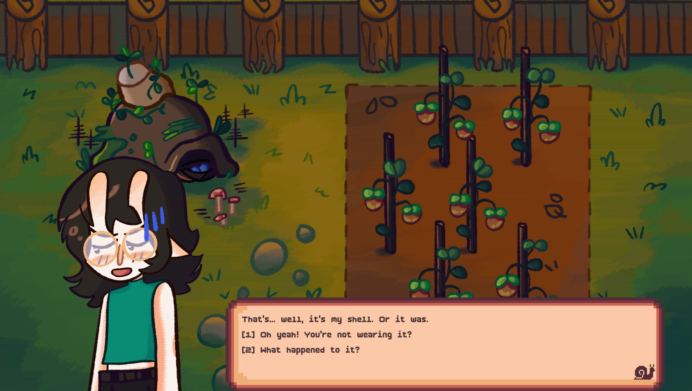
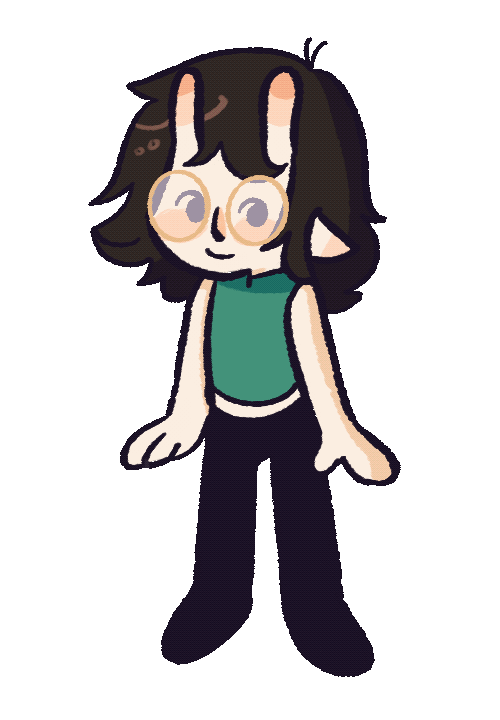
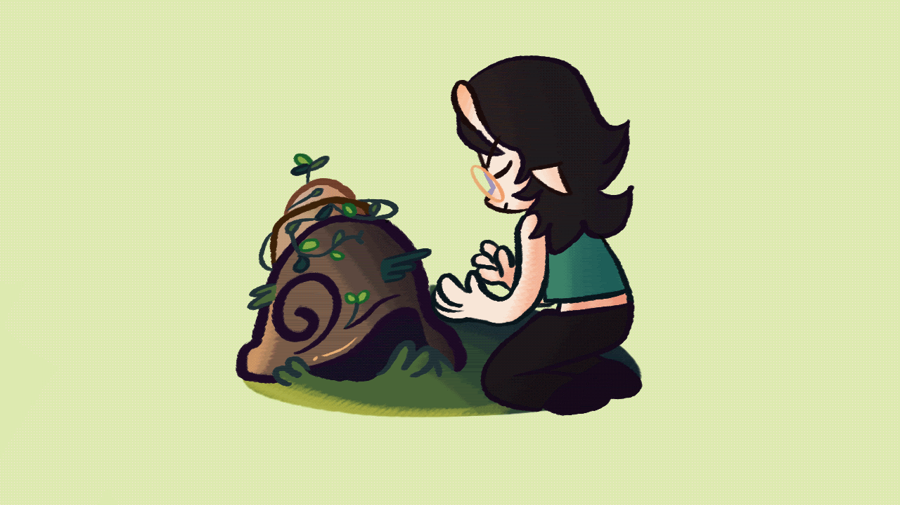

A short game about snai- oh, wait...slugs? Slime Tony doesn't have her shell on anymore...
It seems you two have some catching up to do! Couldn't hurt to water some plants while you're at it.
Passion project. The big one. My north star.
- Procreate - Aseprite - Audacity - P5.js library - Boldpixels by (@YukiPixels) - My blood, sweat, and tears


